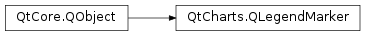

QtCharts.QLegendMarker¶
Inherited by: QtCharts.QCandlestickLegendMarker, QtCharts.QXYLegendMarker, QtCharts.QAreaLegendMarker, QtCharts.QBarLegendMarker, QtCharts.QPieLegendMarker, QtCharts.QBoxPlotLegendMarker
Note
This class was introduced in Qt 5.7.
Synopsis¶
Functions¶
- def
brush() - def
font() - def
isVisible() - def
label() - def
labelBrush() - def
pen() - def
setBrush(brush) - def
setFont(font) - def
setLabel(label) - def
setLabelBrush(brush) - def
setPen(pen) - def
setShape(shape) - def
setVisible(visible) - def
shape()
Signals¶
- def
brushChanged() - def
clicked() - def
fontChanged() - def
hovered(status) - def
labelBrushChanged() - def
labelChanged() - def
penChanged() - def
shapeChanged() - def
visibleChanged()
Detailed Description¶
-
PySide2.QtCharts.QtCharts.QLegendMarker.LegendMarkerType¶
-
PySide2.QtCharts.QtCharts.QLegendMarker.brush()¶ Return type: PySide2.QtGui.QBrush
-
PySide2.QtCharts.QtCharts.QLegendMarker.brushChanged()¶
-
PySide2.QtCharts.QtCharts.QLegendMarker.clicked()¶
-
PySide2.QtCharts.QtCharts.QLegendMarker.font()¶ Return type: PySide2.QtGui.QFont
-
PySide2.QtCharts.QtCharts.QLegendMarker.fontChanged()¶
-
PySide2.QtCharts.QtCharts.QLegendMarker.hovered(status)¶ Parameters: status – PySide2.QtCore.bool
-
PySide2.QtCharts.QtCharts.QLegendMarker.isVisible()¶ Return type: PySide2.QtCore.bool
-
PySide2.QtCharts.QtCharts.QLegendMarker.label()¶ Return type: unicode
-
PySide2.QtCharts.QtCharts.QLegendMarker.labelBrush()¶ Return type: PySide2.QtGui.QBrush
-
PySide2.QtCharts.QtCharts.QLegendMarker.labelBrushChanged()¶
-
PySide2.QtCharts.QtCharts.QLegendMarker.labelChanged()¶
-
PySide2.QtCharts.QtCharts.QLegendMarker.pen()¶ Return type: PySide2.QtGui.QPen
-
PySide2.QtCharts.QtCharts.QLegendMarker.penChanged()¶
-
PySide2.QtCharts.QtCharts.QLegendMarker.series()¶ Return type: PySide2.QtCharts.QtCharts::QAbstractSeries
-
PySide2.QtCharts.QtCharts.QLegendMarker.setBrush(brush)¶ Parameters: brush – PySide2.QtGui.QBrush
-
PySide2.QtCharts.QtCharts.QLegendMarker.setFont(font)¶ Parameters: font – PySide2.QtGui.QFont
-
PySide2.QtCharts.QtCharts.QLegendMarker.setLabel(label)¶ Parameters: label – unicode
-
PySide2.QtCharts.QtCharts.QLegendMarker.setLabelBrush(brush)¶ Parameters: brush – PySide2.QtGui.QBrush
-
PySide2.QtCharts.QtCharts.QLegendMarker.setPen(pen)¶ Parameters: pen – PySide2.QtGui.QPen
-
PySide2.QtCharts.QtCharts.QLegendMarker.setShape(shape)¶ Parameters: shape – PySide2.QtCharts.QtCharts::QLegend.MarkerShape
-
PySide2.QtCharts.QtCharts.QLegendMarker.setVisible(visible)¶ Parameters: visible – PySide2.QtCore.bool
-
PySide2.QtCharts.QtCharts.QLegendMarker.shape()¶ Return type: PySide2.QtCharts.QtCharts::QLegend.MarkerShape
-
PySide2.QtCharts.QtCharts.QLegendMarker.shapeChanged()¶
-
PySide2.QtCharts.QtCharts.QLegendMarker.type()¶ Return type: PySide2.QtCharts.QtCharts::QLegendMarker.LegendMarkerType
-
PySide2.QtCharts.QtCharts.QLegendMarker.visibleChanged()¶
© 2018 The Qt Company Ltd. Documentation contributions included herein are the copyrights of their respective owners. The documentation provided herein is licensed under the terms of the GNU Free Documentation License version 1.3 as published by the Free Software Foundation. Qt and respective logos are trademarks of The Qt Company Ltd. in Finland and/or other countries worldwide. All other trademarks are property of their respective owners.